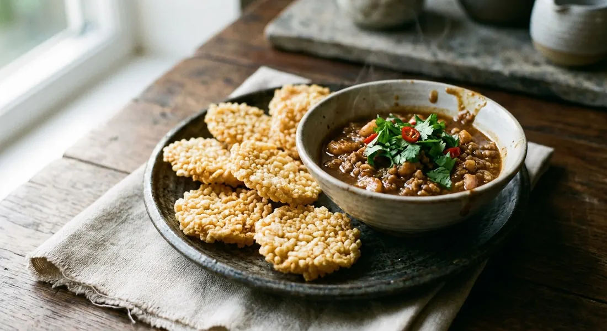

The starter of thrift: the rice crust from the bottom of the pot, sun-dried and fried into a shattering puff, carrying a sweet, salty, nutty crown of pork and shrimp simmered in cracked coconut milk.

The dish begins where most cooking throws something away. ข้าวตัง — khao tang — is the crust of rice that sticks to the bottom of the pot: in the wood-fire kitchens of the recipe writers' grandmothers, nothing went to waste, so the scraped crust was pressed into discs and dried in the sun. Pim's recipe opens with exactly this memory — the pot on the firewood stove, the stuck rice scraped out and dried for the children's snacks — and Bloggang's monnira tells the same story, then fries it to a puff. Fried, the dried crust balloons into a light, airy cracker that shatters between the teeth; the old rice becomes the crispest thing in Thai cooking.
What turns the cracker into a dish is หน้าตั้ง (na tang) — the topping. The name follows the serving: the dip is spooned onto (หน้า) the cracker, thick enough to sit there (ตั้ง) without sliding off. Under it is a full little curry in miniature: the three friends — coriander root, garlic, white pepper — pounded and fried in coconut milk that has first been cooked until it cracks its oil, then minced pork and shrimp, then the Thai trinity of palm sugar, fish sauce and tamarind, finished with shallots and ground roasted peanuts. Wongnai's Tuangrath Kamolwatin calls it an easy dish with a long ingredient list, and notes the quiet test of a good cook: balance the three tastes so that not one shouts above the others.
Kapook's recipe, from the pages of Gourmet & Cuisine magazine, describes it as the snack grandparents grew up with and younger generations barely know — and the home cooks who still make it agree it has never been a restaurant dish. It is party food of the household: crackers fried at the last minute, dip warm in a bowl, everyone spooning for themselves.
| Thai | English | Amount |
|---|---|---|
| ข้าวตังแผ่น | Dried rice cakes (raw discs) | 10–20 pieces |
| หมูสับ | Minced pork | 250 g |
| กุ้งสับ | Minced shrimp | 150 g |
| กะทิ | Coconut milk | 2 cups |
| รากผักชี | Coriander roots | 3 |
| กระเทียม | Garlic | 2 tbsp |
| พริกไทยเม็ด | White peppercorns | 1 tsp |
| พริกแห้งเม็ดใหญ่ | Large dried chillies, soaked and seeded (optional, for colour) | 1–2 |
| น้ำตาลปี๊บ | Palm sugar | 3–4 tbsp |
| น้ำปลา | Fish sauce | 2–4 tbsp |
| น้ำมะขามเปียก | Tamarind water | 2–3 tbsp |
| ถั่วลิสงคั่วบด | Roasted peanuts, ground | ¼–⅓ cup |
| หอมแดงซอย | Shallots, thinly sliced | ⅓ cup |
| น้ำมันพืช | Vegetable oil, for frying | as needed |
The other pots: Phol Food Mafia keeps it lean — 100 g pork, 100 g shrimp, one cup of coconut milk, a single dried chilli, 3 tbsp peanuts, and insists the dip must reduce until it can hold itself on the cracker. Wongnai's Tuangrath uses 300 g pork to 200 g shrimp, three cups of coconut milk, and a teaspoon of seasoning powder in place of extra fish sauce, and recommends any leftover dip over blanched rice vermicelli. Pim's home version is 150 g pork, 100 g shrimp, one box of Amphawa coconut milk, a quarter-cup of onions fried with the paste, and chicken breast as the swap for anyone who does not eat pork. Bloggang's monnira cooks by feel — fish sauce and palm sugar to taste, three big dried chillies for colour, and both thin and thick shop-bought discs. Kapook's tip from the magazine kitchen: pound one soaked dried chilli and one shallot into the paste for colour and perfume, and finish with chilli oil if you like it hot.
The tamarind. Kapook, Wongnai, Pim and Phol Food Mafia all season the dip with tamarind water — the third taste alongside palm sugar and fish sauce. Bloggang's monnira seasons with fish sauce and palm sugar alone and lets the dip ride on sweet and salty. Her dip is the older, simpler line; the tamarind version is today's majority.
The dried chillies. Bloggang pounds in three big soaked chillies, Wongnai two (explicitly for colour, not heat), Phol Food Mafia one small one. Kapook makes them optional — the magazine's tip adds one chilli and one shallot to the paste. Pim leaves them out entirely. Nobody's version is meant to be properly hot; the chilli is for colour and depth.
Onion or not. Wongnai and Pim fry a diced cooking onion with the paste before the meat goes in. Kapook, Bloggang and Phol Food Mafia skip it, trusting shallots alone — added only at the end, sliced, so they keep a little bite.
The order of the crack. Wongnai, Bloggang, Pim and Phol all cook the coconut milk until it splits, then fry the paste in it. Kapook's Gourmet & Cuisine recipe does the opposite: the paste is worked into the raw pork and shrimp, then hot coconut milk is gradually stirred into the mixture before the pot goes on to boil. The destination is the same dip; the road differs.
The ratio of pork to shrimp. Bloggang and Phol Food Mafia run one-to-one; Wongnai and Pim lean on the pork (three to two); Kapook is five to three. All agree the shrimp is the luxury that lifts the pork — how much luxury is a question of budget.
The seasoning salt. Wongnai's Tuangrath seasons with salt and a teaspoon of Knorr seasoning powder rather than more fish sauce — the sponsored-recipe shortcut — while everyone else builds saltiness on fish sauce alone. The two roads taste noticeably different; fish sauce is the older one.
The crackers. Pim and Bloggang both know the true version — leftover rice pressed thin and dried two days in the sun — and both also confess to buying ready-made discs, thin or thick, round or square, from the grocer. The bought discs fry the same; only the memory is different.
This recipe is translated from the following Thai-language sources. Where they disagree, we've said so.
1. Kapook Cooking — "ข้าวตังหน้าตั้ง ของว่างไทยโบราณกรอบนานพ่วงสูตรน้ำจิ้ม", from Gourmet & Cuisine magazine (the base recipe used here) — cooking.kapook.com
2. Wongnai — "ข้าวตังหน้าตั้ง" by Tuangrath Kamolwatin (the three-cup coconut milk pot; Knorr seasoning) — wongnai.com
3. Phol Food Mafia — "Savory Rice Crackers (ข้าวตังหน้าตั้ง)" (the lean 100/100 g version; the thick-enough-to-sit test) — pholfoodmafia.com
4. Pim.in.th — "ข้าวตังหน้าตั้ง" (the wood-fire childhood story; how to make the rice discs at home) — pim.in.th
5. Bloggang — "ข้าวตังหน้าตั้ง" by monnira (the no-tamarind dip; the frying notes) — bloggang.com